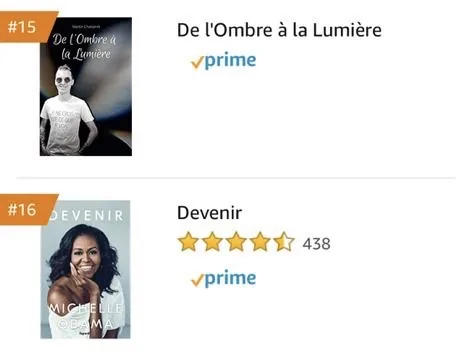

Auteur bestseller — Top 15 Amazon
De l'Ombre à la Lumière, le livre de Marty Blind DJ
À travers ce livre, Marty raconte l'accident, les doutes, les rencontres, la rage de vivre et le chemin qui l'a mené jusqu'aux platines. Un récit personnel et direct sur ce qui bascule, puis sur ce qui peut se reconstruire.
Vidéo de présentation
Marty présente son livre en vidéo
En deux minutes, Marty raconte pourquoi il a écrit De l'Ombre à la Lumière, à qui le livre s'adresse et ce que les lecteurs y trouvent. La meilleure façon de découvrir le ton du livre avant de l'acheter.
Le récit
Le 4 août 2005, tout bascule
Enfant curieux, drôle, sociable et plein d'énergie, Martin semblait avancer vers un avenir dégagé. Puis l'accident arrive. Quinze ans plus tard, Martin devient Marty Blind DJ et transforme cette épreuve en force.

Top 15 des ventes sur Amazon
Un livre déjà entre les mains de milliers de lecteurs : familles, jeunes, entreprises, écoles et lecteurs sensibles aux récits de résilience.
Dans le livre
Une histoire vraie, racontée sans détour
De l'Ombre à la Lumière suit le chemin d'un adolescent qui perd la vue, traverse une période trouble, puis retrouve une raison d'avancer. La musique, les rencontres, l'envie de transmettre et la rage de vivre prennent peu à peu plus de place que l'accident.
Un enfant plein d'énergie
Martin grandit avec une curiosité vive, une forte sociabilité et déjà une vraie place pour la musique.
La perte de repères
Le livre ne gomme pas les moments difficiles : doutes, colère, mauvaises influences, choix compliqués.
La naissance de Marty Blind DJ
Ce qui semblait impossible devient un terrain de reconstruction : apprendre, mixer, créer, monter sur scène.
Ce que vous trouverez dans le livre
Un témoignage utile, structuré, sans pathos
Le récit complet de l'accident
Le 4 août 2005, l'enchaînement des faits, l'hôpital, l'annonce, les premières semaines et les mois qui suivent. Sans flou, sans esquive.
Accident, hôpital, familleLes années sombres
La colère, les doutes, les mauvaises rencontres et les choix compliqués que beaucoup de témoignages préfèrent passer sous silence.
Doute, colère, errancesLe déclic et la musique
Comment la musique, le DJing puis la production sont devenus un terrain de reconstruction concret et un chemin vers la scène.
DJing, scène, productionLa naissance de Marty Blind DJ
Le passage de Martin Chasseret à Marty Blind DJ, l'identité d'artiste, les premiers sets, les premières scènes professionnelles.
Identité, scène, professionnelLes projets qui prolongent
Blind Touch, les conférences, les formations, le coaching : comment un parcours personnel devient un message utile et plusieurs activités cohérentes.
Marque, conférences, formationDes outils transposables
Pour les proches, les jeunes en reconstruction, les RH, les enseignants et toutes les personnes qui veulent transformer une épreuve en énergie.
Proches, RH, écolesPourquoi le lire
Pour comprendre l'homme derrière les platines
Un témoignage accessible
Un récit direct, humain, qui parle autant aux proches, aux jeunes, aux familles qu'aux publics d'entreprise.
Parcours, accident, reconstructionUn support pour les conférences
Le livre prolonge la prise de parole et permet au public de repartir avec une histoire complète.
Conférence, dédicace, échangeUn message sans pathos
Marty ne raconte pas sa vie pour qu'on le plaigne, mais pour montrer qu'un avenir peut se reconstruire.
Résilience, énergie, espoirCommander
Recevez le livre chez vous en quelques jours
De l'Ombre à la Lumière est disponible sur Amazon, en version brochée, avec expédition rapide. Idéal pour vous, pour offrir, ou pour préparer une conférence, un atelier ou une intervention scolaire.